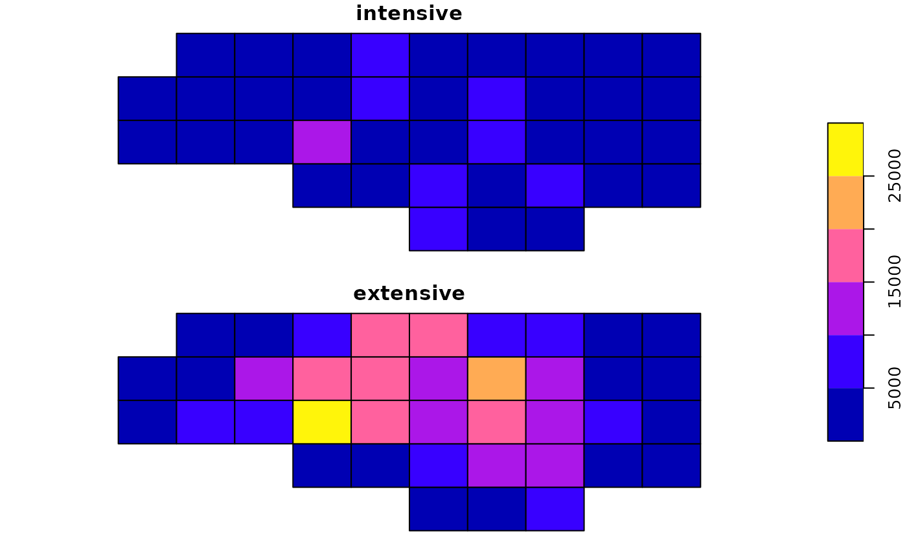

Areal-weighted interpolation of polygon data
st_interpolate_aw(x, to, extensive, ...)
# S3 method for sf
st_interpolate_aw(x, to, extensive, ..., keep_NA = FALSE)object of class sf, for which we want to aggregate attributes
object of class sf or sfc, with the target geometries
logical; if TRUE, the attribute variables are assumed to be spatially extensive (like population) and the sum is preserved, otherwise, spatially intensive (like population density) and the mean is preserved.
ignored
logical; if TRUE, return all features in to, if FALSE return only those with non-NA values (but with row.names the index corresponding to the feature in to)
nc = st_read(system.file("shape/nc.shp", package="sf"))
#> Reading layer `nc' from data source
#> `/tmp/RtmpyIhYcr/temp_libpath467a20bdae2c/sf/shape/nc.shp'
#> using driver `ESRI Shapefile'
#> Simple feature collection with 100 features and 14 fields
#> Geometry type: MULTIPOLYGON
#> Dimension: XY
#> Bounding box: xmin: -84.32385 ymin: 33.88199 xmax: -75.45698 ymax: 36.58965
#> Geodetic CRS: NAD27
g = st_make_grid(nc, n = c(10, 5))
a1 = st_interpolate_aw(nc["BIR74"], g, extensive = FALSE)
#> Warning: st_interpolate_aw assumes attributes are constant or uniform over areas of x
sum(a1$BIR74) / sum(nc$BIR74) # not close to one: property is assumed spatially intensive
#> [1] 0.4026287
a2 = st_interpolate_aw(nc["BIR74"], g, extensive = TRUE)
#> Warning: st_interpolate_aw assumes attributes are constant or uniform over areas of x
# verify mass preservation (pycnophylactic) property:
sum(a2$BIR74) / sum(nc$BIR74)
#> [1] 0.9999998
a1$intensive = a1$BIR74
a1$extensive = a2$BIR74
plot(a1[c("intensive", "extensive")], key.pos = 4)
